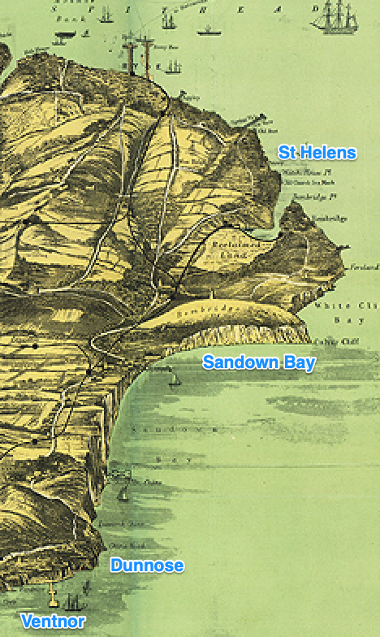

Introduction#
In compiling the various resources included in this collection, I began by creating simple text copies of the original news articles based on scanned copies and automated text scans discovered via the online (subscription based) British Newspaper Archive. But when it came to presenting the materials, a simple chronological ordering, without any interpretation or commentary, did not feel right.
The tale of H.M.S. Eurydice is set on the Isle of Wight in the last quarter of the nineteenth century. The following map shows the key locations involved in this part of the story.

The Isle of Wight, AW Fowles, 1897 annotatedBut in tracking down reports of the Eurydice, I also started to come across various other stories that were in the air around the same period of time, and the same part of the island. And so the later part of the book leaves the Eurydice behind, and instead starts to concentrate on the locale around Brading, Bemridge, and St. Helens around the time that the Eurydice could be seen from those shores.
In my previous set of storynotes, On the Trail of the Sin-Eater, I did largely follow a chronologocial route, with liberal amounts of commentary on each piece of correspondence included. But for this collection, I wanted to try a different approach, keeping the commentary to a minimum, or at least, not including an inline commentary.
The approach I have opted for is, in part, to separate out a series of thematic chronologies that group the news articles in different ways: the collection starts with a review of the loss of the Eurydice, followed by a quick review of the initial attempts to raise the wreck. Another strand reviews fundraising and “social” events around surrounded the event, yet another some of the personal stories by way of discovery of the bodies, the resulting funerals, and the memorials raised to commemorate the dead, and the terrible calamity that caused such a great loss of life. A large number of memorial poems were also published, and these, too, are collected together in their own strand. The continued attempts to raise the wreck, then its eventual trasnportation to Portsmouth, where it was finally dismantled, as well as the “administrative” processes following the accident - the coroner’s inquiries and the court-martial, also merit their own strands. I have also started trying to find eyewitness testimony as recorded years later in “I remember” style reminiscenses. To add some depth background to life on the Island at the time, I have also included some additional notes on matters that would likely have been common knowledge at the time, at least on the Island, if not across Britain more widely.
To maintain the integrity of each strand, I have in part deconstructed the original articles, perhaps rather foolishy without maintaining copies of the complete original text documents as complete articles. I did, however, try to make a note of where each excerpt came from, as well as a reference within the “hulk” of the original article identifying that sections had be extracted for use elsewhere. At some point, I intend to automate the creation of a simple database from the text sources that will then also provide a way of reconstituting the original, full length, articles.
Throughout each strand, I will attempt to provide a simple review of the major points, with occasional quotes that appear to me the most notable. At this point, it should also be stated that my own personal motivation for creating this resource was to support the development of a story based on the loss of the Eurydice, a telling that I could use as part of a “two part tale” linking the original myth of Orpheus and Eurydice with the loss off her naval namesake. As a secondary motivation, I was looking to find enough detail to support the story so that it could — and can — be told with some sort of confidence as a local tale. The theme reviews are in no small part influenced by such rationale.